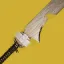

推荐者：
马sirFPS#5846# 棱镜虚空·意外涡流故我在 推荐人：马sirFPS#5846 描述：镰刀远程起手挂切割，故我在涡流爆发收尾，疲惫+蓝绿甲与虚空盾，棱镜虚空猎的紫绿绞肉机。 更新：2026.9.29 场景：宗师/终极 分支：棱镜 强度：创意 核心：故我在 ## 职业 职业：猎人#row:elements/class-abilities/分节/猎人 超能：暗影箭矢：狩猎陷阱#2722573683 星相：飞升#4194622039、严冬帷幕#2934767477 碎片：保护琢面#2626922120、黎明琢面#2626922126、希望琢面#2626922122、使命琢面#124726498 手雷：暮域手雷#1399216 近战：陷阱炸弹#1139822081 职业技能：赌徒闪身#426473317 ## 武器 异域武器：故我在#1681583613 | 涡流框架#2557881346、意外缓刑#1327961177 传说武器：鲁弗斯的狂怒#484515708 | 切割#923806249、混沌重塑#3640170453 传说武器：拜龙教镰刀#2525261820 | 急切刀锋#2077819806、羸弱能量球#243981275 ## 护甲 异域护甲：相对主义#2809120022、复兴之灵#3751917995、曲腹蛛之灵#3751917994 套装：剑圣#set:2391762223 2 件 × 圣贤保护者#set:4222859846 2 件 头盔：特殊武器弹药搜寻者#2595839237、特殊武器弹药搜寻者#2595839237、特殊武器弹药搜寻者#2595839237 护臂：鼓舞爆弹#3726719281、动量转移#3599522901、手雷洗礼#1781551382 胸甲：电弧抗性#953234331、震荡阻尼器#3719981603、灼烧抗性#3194530172 腿部：武器洗礼#4046357305、回收利用#4294967305、虚空武器激涌#3467460423 职业物品：收割者#40751621、特殊终结技#4004774872、投弹手#4188291233 ## 神器 神器：废墟石板 模组：电介质#3585856470、瓦解能量球#3585856464、弹中藏金#2596646302、群敌飞梭#2596646301、邪恶收割#2596646299、崩解#1319563985、除颤爆破#1319563986 ## 六维 六维：生命 ~ ｜ 近战 50+ ｜ 手雷 80+ ｜ 超能 80+ ｜ 职业 80+ ｜ 武器 170+ ## 注解 护甲模组任意搭配。 因为刷不出来纯五度故我在所以用的虚空箭加虚空意外缓刑的涡流故我在（刀剑格挡优先保证充能效率）。 使命琢面可以替换成其他琢面看自己需求本身近战就能上虚空护盾。 如果有纯五度那就用使命琢面，武器模组洗礼不强求，尽量保证全局绿弹回转，或者2绿一紫。拜龙教镰刀锁死最大充能效率保证掏出来充能右键保底一个能量球。 一定要留意弹药回转！！！没弹药就成了虚空箭丢丢猎了！！！
职业
武器
神器模组
护甲
- 生命~
- 近战50+
- 手雷80+
- 超能80+
- 职业80+
- 武器170+
腿部
注解
护甲模组任意搭配。
因为刷不出来纯五度故我在所以用的虚空箭加虚空意外缓刑的涡流故我在（刀剑格挡优先保证充能效率）。
使命琢面可以替换成其他琢面看自己需求本身近战就能上虚空护盾。
如果有纯五度那就用使命琢面，武器模组洗礼不强求，尽量保证全局绿弹回转，或者2绿一紫。拜龙教镰刀锁死最大充能效率保证掏出来充能右键保底一个能量球。
一定要留意弹药回转！！！没弹药就成了虚空箭丢丢猎了！！！